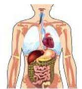
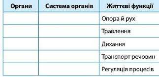
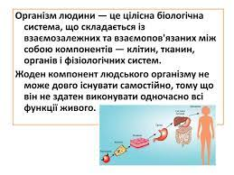

Завдання №1
Розгляньте малюнок 1, розпізнайте зображені на ньому органи. Заповніть таблицю


Відправити

Немає активних тестів
Вступ. Організм людини як цілісна система
Немає відеочатів
Учень
 Учень 2
Учень 2
Тут будуть знаходитися ваші навчальні матеріали
Організм людини є складною біологічною системою, в якій розрізняють системи різних рівнів структурної організації: від атомів і молекул — аж до систем органів.
Кожен рівень організації організму людини має свою структуру і виконує певну функцію. Усі компоненти взаємопов’язані та взаємодіють між собою, утворюючи структурно-функціональну єдність — цілісний організм.
Організм людини, як і будь-яка біологічна система, є відкритою системою, оскільки відбувається неперервна взаємодія з довкіллям, під час якої здійснюється обмін із середовищем речовиною, енергією та інформацією.
Людині притаманні загальні властивості біологічних систем:
самоорганізація — внутрішня впорядкованість, яка виявляється через взаємодію її складових, що забезпечує цілісність організму, надає йому якісно нових властивостей;
обмін речовин та енергії, що проявляється в процесах живлення, дихання, виділення;
ріст (збільшення маси і розмірів організму або його органів) і розвиток (якісні перетворення організму);
подразливість — відповідь організму на вплив умов зовнішнього середовища та зміни внутрішнього середовища;
самовідтворення — відтворення собі подібних у процесі розмноження;
спадковість (властивість організму передавати характерні йому особливості будови і розвитку потомству) і мінливість (здатність набувати нових ознак);
саморегуляція — здатність організму підтримувати сталість хімічного складу, фізичних властивостей, перебігу фізіологічних процесів;
адаптація — здатність організму пристосовуватися до змінних умов навколишнього середовища.
Рівні організації тіла людини
Організм людини можна розглядати на різних рівнях:
Організм людини складається з молекул, атомів, йонів, утворених різними хімічними елементами. Найважливіше значення для побудови білкової структури організму мають Карбон С, Гідроген Н, Оксиген О, Нітроген N. Організм людини складається з еукаріотичних клітин, які мають оформлене ядро і будову, характерну для клітин тварин.
Клітини і міжклітинна речовина утворюють в організмі людини тканини. Залежно від виду тканини вони виконують різні функції, тому мають різні розміри і форму.
Кожен орган складається з тканин, які мають загальну структуру і виконують подібні функції. В органі один вид тканини завжди переважає.
Клітина — це найменша структурна та функціональна одиниця живого. Ззовні вона вкрита клітинною мембраною, а зсередини заповнена цитоплазмою з органелами та ядром. Ці маленькі заповнені рідиною мішечки містять компоненти, відповідальні за тисячі біохімічних реакцій, необхідних для росту й виживання.
В організмі людини нараховується близько 200 тинів клітин. Форма й будова різних тинів клітин тісно пов’язані з виконуваною ними функцією.
Тканина — це сукупність клітин, які мають спільне походження, подібні за будовою і функціями та міжклітинною речовиною, яка їх оточує. Усі тканини організму людини можна розділити на 4 основні типи: епітеліальна, нервова. м’язова, тканини внутрішнього середовища.
Органи — це наступний рівень організації організму людини. Орган складається із двох чи більше типів тканин. Найбільшим органом організму людини є шкіра, що складається з чотирьох основних типів тканин. Для виконання спільних функцій, органи об’єднуються в системи органів, які ще називаються фізіологічними системами. В організмі людини виділяють такі системи органів: кровоносну, дихальну, лімфатичну, імунну, травну, видільну, опорно-рухову, покривну, статеву, ендокринну, нервову.
Кровоносна, або серцево-судинна система — транспортує кисень, гормони, поживні речовини до клітин організму. Також вона збирає продукти життєдіяльності клітин і вуглекислий газ.
Дихальна система — насичує кров киснем та виводить із організму повітря, насичене вуглекислим газом.
Імунна система — захищає організм від збудників інфекційних захворювань та шкідливих, токсичних речовин.
Лімфатична система — транспортує лімфу між тканинами та кровоносним руслом, разом з імунною системою захищає організм від інфекцій і хвороб.
Травна система — забезпечує перетравлення їжі і всмоктування поживних речовин, мінералів, вітамінів, води.
Видільна система — виводить із організму надлишки води, солей, продуктів обміну речовин, контролює сталий водно-сольовий баланс та рівень кислотності.
Опорно-рухова система — підтримує форму тіла, захищає м'які тканини, зберігає мінеральні речовини. Бере участь у скоротливій активності різних органів та виробленні тепла, забезпечує дихальні рухи. Бере участь у кровотворенні.
Покривна система (шкіра, волосся, нігті) — забезпечує захист від механічних пошкоджень, проникнення інфекційних мікроорганізмів, втрати води, а також процеси терморегуляції.
Репродуктивна система (статева) — виробляє статеві клітини (сперматозоїди, яйцеклітини), статеві гормони, забезпечує розмноження.
Нервова система — збирає, обробляє та передає інформацію, регулює функції інших органів.
Ендокринна система — виробляє гормони, що регулюють взаємозв’язок між різними органами та метаболізм усього організму.
Хоча кожна з фізіологічних систем органів відповідає за виконання специфічної функції, різні системи органів об’єднуються у функціональні системи для забезпечення злагодженої роботи організму. Наприклад, одна з найбільш важливих функцій організму — це забезпечення клітин киснем і поживними речовинами та виведення продуктів обміну речовин. Для виконання даної функції потрібна злагоджена робота дихальної, кровоносної, лімфатичної, травної, видільної систем та координація з нервовою та ендокринною системами.
Організм людини працює як єдине ціле завдяки механізмам регуляції фізіологічних функцій: гуморальному, нервовому.
Гуморальний механізм регуляції (від лат.humor - волога) здійснюється з допомогою хімічних речовин, що утворюються в процесі обміну речовин у клітинах, розносяться кров’ю по всьому організму і впливають на діяльність клітин, тканин і органів. Деякі з них володіють високою біологічною активністю - гормони. У дуже малих концентраціях вони здатні викликати значні зміни функцій окремих органів і організму в цілому.
Гуморальна регуляція характеризується тим, що не має певного “ адресата” (хімічна речовина діє на всі клітини, але чутливими до неї ті, в яких є відповідний рецептор), повільно діє, тривалий час впливає на організм.
Нервова регуляція - більш досконала, забезпечується діяльністю нервової системи, яка об’єднує і зв’язує всі клітини і органи в єдине ціле, змінює і регулює їхню діяльність, здійснює зв’язок організму з навколишнім середовищем. ЦНС досить тонко і точно сприймаючи зміни навколишнього і внутрішнього стану організму, своєю діяльністю забезпечує розвиток і пристосування організму до мінливих умов існування.
Нервова і гуморальна регуляція тісно взаємозв’язані. Гормони впливають на стан нервової системи. Утворення і виділення гормонів контролює нервова система. Нервові структури надзвичайно швидко сприймають найдрібніші зміни фізико-хімічних параметрів зовнішнього і внутрішнього середовища і відповідно реагують на них за допомогою хімічних факторів регуляції. Нервова і гуморальні механізми регуляції діють взаємоузгоджено і утворюють єдину нейрогуморальну регуляцію, яка створює умови для взаємодії всіх систем організму, зв’язує їх в єдине ціле і забезпечує взаємодію організму із середовищем.
Розгляньте малюнок 1, розпізнайте зображені на ньому органи. Заповніть таблицю